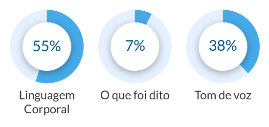

Programação Neurolinguística
Bem-vindo(a) à aula 2 do curso 2Em seu percurso até aqui você já conheceu as principais estratégias de comunicação voltadas para o papel do líder. Agora é o momento de nos aprofundarmos um pouco mais em técnicas de Programação Neurolinguística, que podem agregar ainda mais sucesso a sua comunicação. Pequenos detalhes podem fazer uma grande diferença.
Nesta aula você verá como obter ainda mais sucesso na gestão de pessoas, a partir das contribuições da neurociência no campo da comunicação.
Ao final da aula, você encontrará recomendações de leituras e vídeos.
Vamos lá?
Bom estudo!
O que é PNL?
PNL – o que significa?
Programação – como sequenciamos nossas ações para alcançarmos metas. Tem origem na informática, ao sugerir que nosso funcionamento é composto de “programas” habituais que podem ser mudados.
Neurologia – sistema nervoso e caminhos mentais dos cinco sentidos, ou seja, a estrutura de um funcionamento da mente e de como pensamos.
Linguística – como usamos a linguagem e como esse uso implica em significações, mudanças, transformações. Capacidade de usar uma linguagem e a forma como determinadas palavras e frases refletem no mundo mental.
Saiba mais!
Para conhecer mais sobre o PNL, leia:
- “Estudo da excelência humana” - Steve Andreas (ANDREAS; FAULKNER, 1995) - verificar se é esta referência: ANDREAS, Steve; FAULKNER, Charles (orgs). PNL Programação Neurolinguística: a nova tecnologia do sucesso. Rio de Janeiro: Campus; Elsevier, 1995.
- “Estudo da estrutura da experiência subjetiva” - Joseph O’Connor (O’CONNOR; SEYMOUR, 1990) - verificar se é esta referência: O'CONNOR, Joseph; SEYMOUR, John. Introdução à Programação Neurolinguística: como entender e influenciar as pessoas. São Paulo: Summus, 1990.
- “Estratégia de aprendizagem acelerada para a detecção e utilização de padrões de mundo” - John Grinder (BANDLER; GRINDER, 1997) - verificar se é esta referência: BANDLER, Richard;
- GRINDER, John. A estrutura da magia: um livro sobre linguagem e terapia. [S.l.]: Guanabara Koogan, 1997. v.1.
- “Método para a modelagem da excelência de forma que possa ser duplicada” – Richard Bandler (BANDLER; GRINDER, 1997) - verificar se é esta referência: BANDLER, Richard; GRINDER, John. A estrutura da magia: um livro sobre linguagem e terapia. [S.l.]: Guanabara Koogan, 1997. v.1.
Pressupostos Básicos
As pessoas têm, em potencial, todos os recursos de que necessitam.
Imagens mentais, vozes interiores, sensações e sentimentos são os blocos de construção de nossos recursos mentais. Podemos usá-los para construir qualquer pensamento, sentimento ou habilidade, colocando-os depois onde se deseja.
As pessoas sempre fazem as melhores escolhas que podem, dados seus mapas do mundo.
Cada um faz o melhor que pode, considerando o contexto e os recursos que tem no momento.
Processamos todas as informações através de nossos sentidos.
Percebemos o mundo através do que vemos, sentimos e ouvimos.
O desenvolvimento dos sentidos para que se tornem mais aguçados dá melhores
informações e ajuda a pensar de maneira mais clara.
O significado da comunicação é a resposta que você obtém, independente de sua intenção.
A comunicação é avaliada pelo resultado que ela produz. Os outros recebem o que dizemos e fazemos por meio de seus mapas mentais do mundo. Quando alguém ouve algo diferente do que tivemos a intenção de dizer, esta é a nossa chance de observarmos que comunicação é o que se recebe.
A afirmação de que “o significado da comunicação é o resultado que se obtém” representa a importância da percepção do outro.
Relevância = o que foi percebido
Conversar, ensinar, aprender, negociar, relacionar-se, expressar-se de diversas maneiras.
Comunicação é o que o outro entende
Comunicação é como o outro entende o que você comunicou.
Como vimos na aula anterior, a mensagem transmitida do emissor ao receptor é afetada por diversos fatores, que incluem a experiência pessoal, empatia, interferências externas, dentre outros.
Além dessa influência de diversos fatores, a mensagem que transmitimos também está impregnada de elementos não verbais, que podem reforçar ou até mesmo ser contraditória com o conteúdo que queremos transmitir. Desta forma, a comunicação envolve mais que as palavras, que representam apenas uma parte do processo.
Posição Perceptual.
A posição perceptual é o ponto de vista que adotamos.
Há uma primeira posição (nossa própria), uma segunda posição (a de outra pessoa), uma terceira posição (a observar o relacionamento entre as duas) e uma quarta posição (o sistema contendo essas outras posições.
As posições perceptuais são os pontos de vista fundamentais que se podem tomar com respeito a um relacionamento entre você mesmo e uma outra pessoa. Usar as posições perceptuais na comunicação significa a capacidade de se deslocar para esses múltiplos pontos de vista com o propósito de enriquecer o “mapa” da comunicação.
Comunicação efetiva.
A chave para a comunicação efetiva é evitarmos distorções. Para isso é importante que você tenha clareza da sua intenção ao comunicar, seja capaz de flexibilizar a partir da posição do outro e tenha consciência das respostas obtidas.
Sistemas representacionais
Estruturamos a experiência de mundo pelos nossos sentidos. Eles são canais para representar internamente informações. Usamos os três sentidos o tempo todo, mas temos a tendência a privilegiar um dos canais.
Visual
Você pensa Visualmente:
Imagina uma imagem.
Representações da linguagem:
Imaginar, ver, mostrar, ilustrar, ter insight, olhar.
Auditivo
Você pensa Auditivamente:
Ouve internamente uma conversa.
Representações da linguagem:
Conversar, escutar, chamar, ressoar, ouvir.
Cinestésico
Você pensa Cinestesicamente:
Sente as sensações de uma vez que se sentiu motivado.
Representações da linguagem:
Pegar, trocar, encontrar, sentir, agarrar.
Pessoas Auditivas.
Postura mais serena;
Respiração profunda;
Ficam satisfeitos com base no que ouvem;
Gostam de ouvir mas não conseguem esperar para falar;
Descrições longas e repetitivas;
Usar palavras auditivas: ouça..., escute..., deixe-me explicar... discutir, relatar, isso soa bem, explicar, por assim dizer, ouviu falar.
Pessoas Visuais.
Mantem-se a maior distância;
Respiração e fala rápida;
Ligam para a aparência;
Mostram folhetos, esboços, etc;
Impacientes quando tem que ouvir explanações longas;
Uso desajeitado das palavras;
Descrevem coisas com detalhes;
Usam palavras visuais: Observar, ficou claro, perspectiva, visibilidade, brilhante, sem sombra de dúvida, foco.
Pessoas Cinestésicas.
Sensações predominam;
Roupas confortáveis;
Ritmo mais lento ao falar;
Voz baixa;
Gesticulam quando falam;
Não são bons ouvintes;
Ficam muito perto quando falam ou ouvem;
Perdem rapidamente o interesse por discursos;
Usar palavras cinestésicas: Sinto que ..., concreto... entrar em contato, choque, esforço, quente, firme, bloqueio, guiar.
Rapport: Sintonia.
Rapport é um conceito do ramo da psicologia que significa uma técnica usada para criar uma ligação de sintonia e empatia com outra pessoa.
Esta palavra tem origem no termo em francês rapporter que significa "trazer de volta". O rapport ocorre quando existe uma sensação de sincronização entre duas ou mais pessoas, porque elas se relacionam de forma agradável.
No contexto teórico, o rapport inclui três componentes comportamentais: atenção mútua, positividade mútua e coordenação.
Rapport de postura e movimento: acompanhar os gestos, expressões e postura da outra pessoa;
Rapport das qualidades vocais: velocidade, timbre, volume, pontuações, etc;
Respiração: melhor método para acompanhar a voz;
Repetir frases: o significado das palavras não é o mesmo;
Técnica da recapitulação: “então o que você quer é...”; “deixe-me ver se entendi exatamente...”
Para se estabelecer Rapport é necessário criar a empatia, que como visto no curso 1 - Entendendo o Comportamento Organizacional, é criar uma conexão emocional com o outro, buscando entender a perspectiva dele. Ou seja, sair do seu MAPA MENTAL para o MAPA MENTAL DO OUTRO, o que significa acessar elementos de como o outro pensa, e isto exige uma disposição para acompanhar a linha de raciocínio do outro, no ritmo do outro, demonstrando que você está acompanhando a sua perspectiva.
Rapport: o que é essencial.
Assumir a 2ª Posição, estar na posição do outro.
Interesse genuíno na outra pessoa.
Curiosidade quanto a quem é a outra pessoa – saber da estrutura profunda.
Disposição para ver o mundo a partir do ponto de vistada outra pessoa.
Saiba mais...
Para saber mais sobre o assunto leia:
READY, Romilla; BURTON, Kate. Programação Neurolinguística para leigos. [S.l.]: Alta Books, 2016.
Resumo da aula 2
Chegamos ao final da aula 2.
Nesta aula conhecemos alguns aspectos da PNL e como elas se relacionam com a comunicação, considerando o papel da liderança. Observamos ainda qual é a visão sistêmica da comunicação, no que diz respeito à posição perceptual, ou seja, do ponto de vista que adotamos.
Para finalizar esta aula, também vimos que os sistemas representacionais influenciam a maneira como entendemos o mundo e transmitimos nossas ideias, o que tem relação direta com a sintonia que devemos buscar quando nos comunicamos com o outro, levando essas características em consideração.
Antes de seguir para a aula 3, faça a atividade proposta para essa aula.
AvaliaçãoNão deixe de conferir as indicações de leitura e de vídeo desta aula!
IndicaçõesAguardamos você na aula 3!